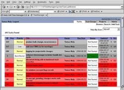

- Opening the task window
-
Show/Hide Sections
See Also:
- General Information
- Progress
- Timeline
- People/Resources
- Task Groups / Milestones
- Dependencies/Subtasks
- Notes
- Opening the task window:
- Show/Hide Sections:
- General Information:
- Progress:
- Timeline:
- People/Resources:
- Task Groups / Milestones:
- Dependencies/Subtasks:
- Notes:
From either the task queue (browse) page or the task search page, one can click on a task's title or ID to get to edit it.
You can show or hide sections of a task to see just the information you want, so it's not overwhelming nor is it incomplete. Simply click on the checkbox next to each section's header. You can change your settings (via your user profile) to whether you always want a 'power user' (extended) view of tasks, or just a 'basic user' (simple) view.
As a task requestor, you may edit the title, description, product, priority and task category of a task. The task owner may only edit the task category.
As the task's owner (or requestor), you can alter the status field, the percent completed, the stage (determined by the task category), and the cost.
As a task's requestor, you can edit the start and due dates, along with the estimated hours of a task. The task owner can only edit the estimated finish date, actual finish date and actual hours.
As a task's requestor, you may change the owner and requestor to someone else. You may also reassign a task, possibly with the assistance of the workload tool. The task owner may only modify the resources, participants and web/URL references.
As a task's requestor, you may add new or existing milestones / task groups, or remove them. As the task's owner, you may only view their details.
The task's owner may delegate part of their work to other people through subtasks. The work may already exist, and if it must be done prior to this task, it is considered a dependency. By clicking on 'Must complete before parent' while it is highlighted, the parent task will display a message saying that it cannot be worked on/completed prior to work, due to the dependency. You may browse all to do bulk changes, view individual subtasks, or may view them all in a Gantt chart fashion.